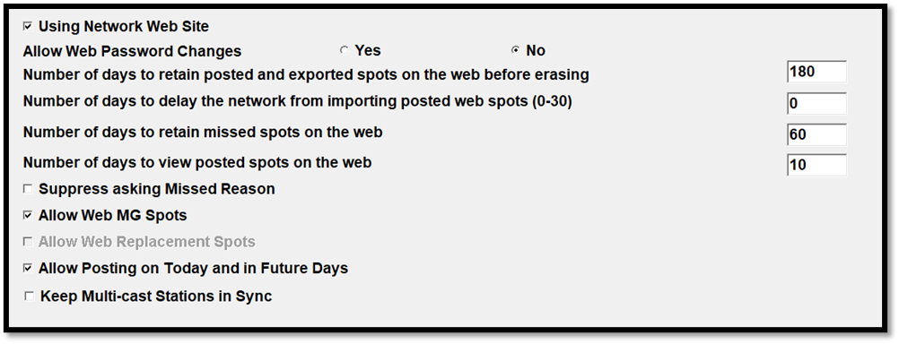

Web Options
The Web Options tab is used to define different options used by the Counterpoint Affidavit system.

- Using Network Website: This option should be checked on if you are using the Counterpoint Affidavit System or the Cumulus Export.
- Allow Web Password Changes: When set to Yes, affiliates will be able to change the password that they use to login to the Counterpoint Affidavit system. When set to No, their assigned password can only be changed on the Affiliate System.
- Number of days to retain posted and exported spots on the web before erasing: The amount of time (in days) you will allow posted affidavit information to remain on the web before it is permanently erased. (This option is deactivated, spots are not erased from the web.)
- Number of days to delay the network from importing posted web spots (0-30): The amount of days that a posted affidavit will remain on the Counterpoint Affidavit System before it is imported into the Network Affiliate System. Delaying the importing of an affidavit gives the affiliate time to make changes if necessary. This will affect all agreements. The max setting is 30 days.
- Number of days to retain missed spots on the web: This determines how long a missed spot remains on the web before it gets archived. (This setting is currently deactivated.)
- Number of days to view posted spots on the web: This determines the number of days that posted spots will remain on the Counterpoint Affidavit system before they are archived (and no longer able to viewed by affiliates). This number must be equal or greater than 14.
- Suppress asking Missed Reason: When checked on, spots on the web can be marked as not aired without specifying a missed reason.
- Allow Web MG Spots: When checked on, makegoods can be created on the Counterpoint Affidavit system by station users of the website.
- Allow Web Replacement Spots: When checked on, replacement spots can be created by station users to replace a spot that cannot air with another spot.
- Allow Posting on Today and in Future Days: For stations set to use website version 1 (configured on the Stations screen in the Web Affiliate Version Number field), whether this setting is checked on or off, station users of the Counterpoint Affidavit System will be allowed to post spots airing on today's date or for future dates (or past dates). For stations set to use website version 2, when this option is checked on, then future spots and spots on today's date (or in the past) can be posted normally. When this option is not checked, then when viewing affidavits on the station website, any spots pledged to air today or in the future will have their "Aired" status field and "Air time" field grayed out, which prevents them from being posted. Once those spots are in the past, those fields will no longer be grayed out and can be posted normally. (Available on version 7.0 and above only.)
- Keep Multicast Stations in Sync: When not checked on, after a web affidavit has been posted for a multicast agreement, changes can be made to the posted spots that do not get copied to the other station or stations in that multicast agreement. This is the default option and how it has worked up until the addition of this setting on version 7.1. When checked on, after a web affidavit has been posted for a multicast agreement, changes made to the posted spots will get copied to the other station or stations in that multicast agreement, keeping the multicast affidavits entirely in sync. (Available on version 7.1 and above.)
Starting with version 8.1, if web version 3 is used, then this tab is not shown, as the Web Options settings are handled through the Counterpoint Affidavit system, in the Network Admin section. The "Using Network Website" checkbox has been moved to the Options tab. For more information, click here.